Märts 2026
Aruande kuupäev: 2026-04-07
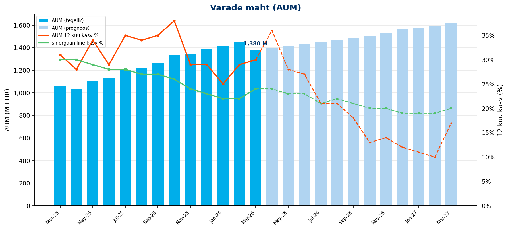
| KPI | Märts 2026 |
|---|---|
| AUM kuu lõpus | 1380 M EUR |
| AUM 12 kuu kasv | 30% |
| sh sissemaksetest ja vahetustest | 24% |
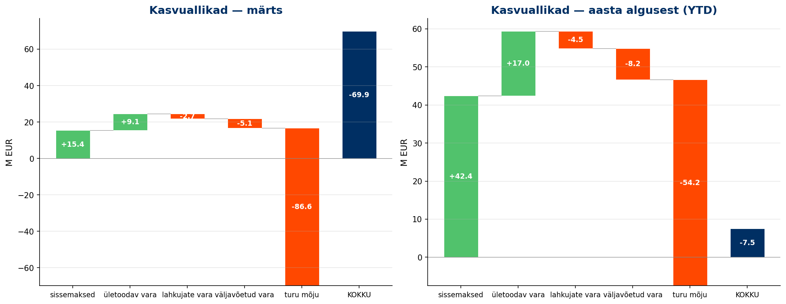
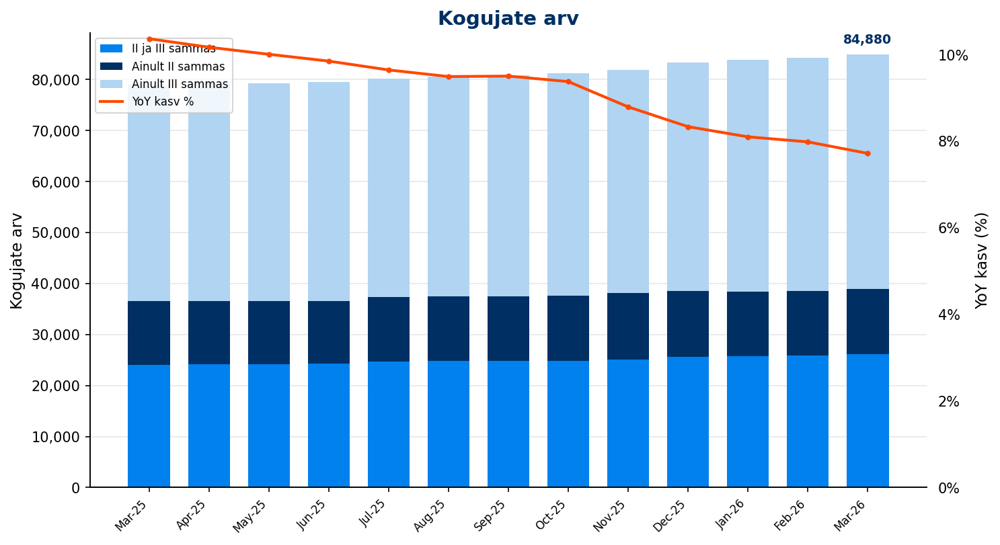
| KPI | Märts 2026 |
|---|---|
| Kogujate arv | 84,880 |
| sh ainult II sammas | 12,846 |
| sh ainult III sammas | 45,883 |
| sh II ja III sammas | 26,151 |
| YoY kasv | 7.7% |
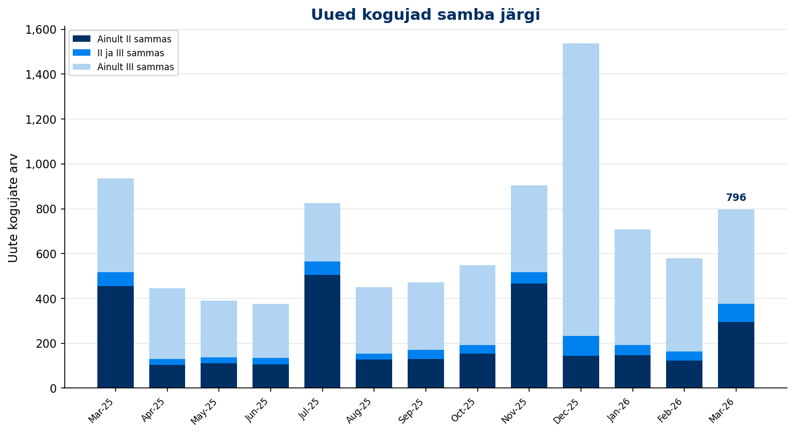
| KPI | Märts 2026 | YTD |
|---|---|---|
| Uued kogujad | 796 | 2,084 |
| YoY muutus | -15.0% | |
| sh uued II samba kogujad | 648 | 1,242 |
| sh uued III samba kogujad | 602 | 1,855 |
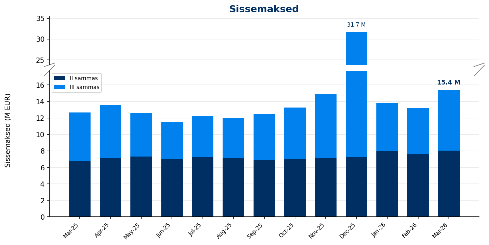
| KPI | Märts 2026 | YoY | YTD | YoY |
|---|---|---|---|---|
| II samba sissemaksed | 8.0 M EUR | 18.8% | 23.6 M EUR | 25.5% |
| III samba sissemaksed | 7.4 M EUR | 24.9% | 18.8 M EUR | 19.0% |
| Sissemaksed kokku | 15.4 M EUR | 21.6% | 42.4 M EUR | 22.5% |
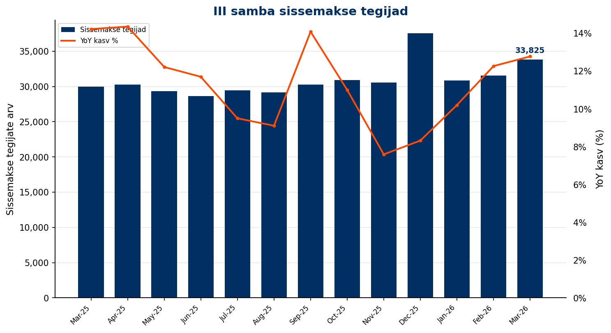
| KPI | Märts 2026 | YoY | YTD |
|---|---|---|---|
| Sissemakse tegijate arv | 33,825 | 12.8% | 36,409 |
| Püsimakse tegijate osakaal | 70.0% |
| KPI | Märts 2026 | YoY | YTD | YoY |
|---|---|---|---|---|
| Maksemäära tõstnud | 213 | 12.7% | 548 | 5.8% |
| Maksemäära langetanud | 27 | -37.2% | 109 | -37.4% |
| KPI | Märts 2026 | YTD |
|---|---|---|
| Sissemaksete summa | 0.6 M EUR | 7.5 M EUR |
| Sissemakse tegijate arv | 454 |
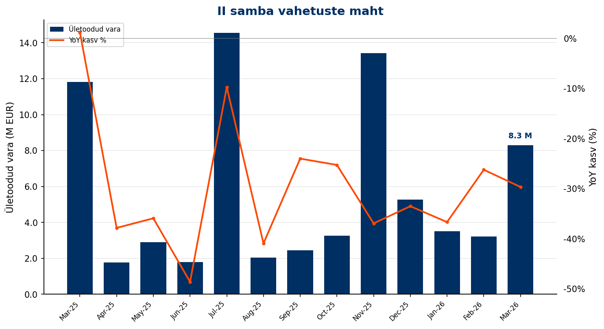
| KPI | Märts 2026 | YoY | YTD | YoY |
|---|---|---|---|---|
| Sissevahetajate arv | 570 | -33.4% | 1,053 | -34.4% |
| Ületoodud vara | 8.3 M EUR | -29.7% | 15.0 M EUR | -30.9% |
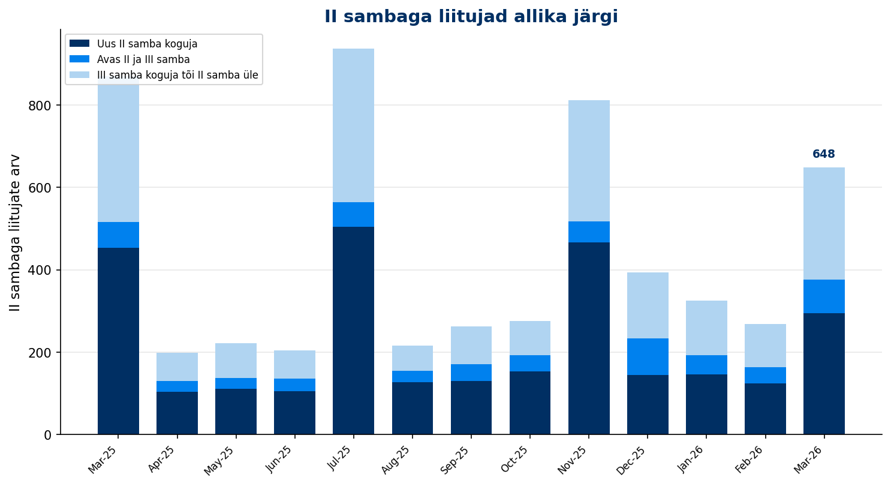
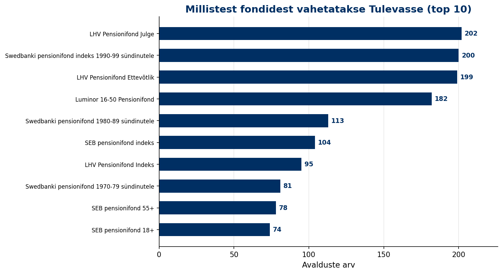
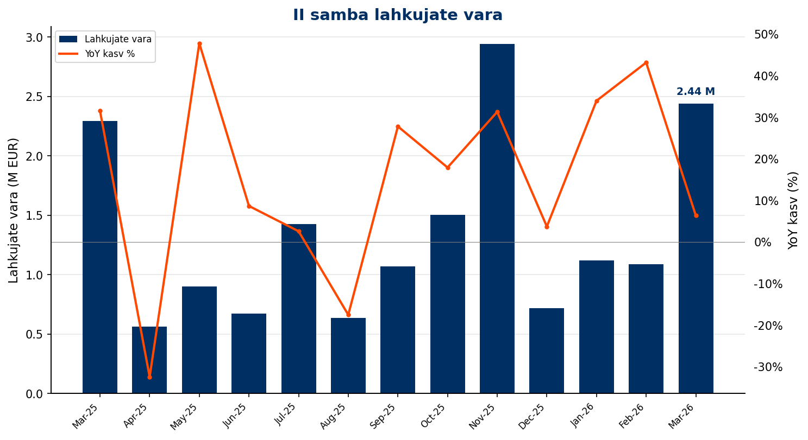
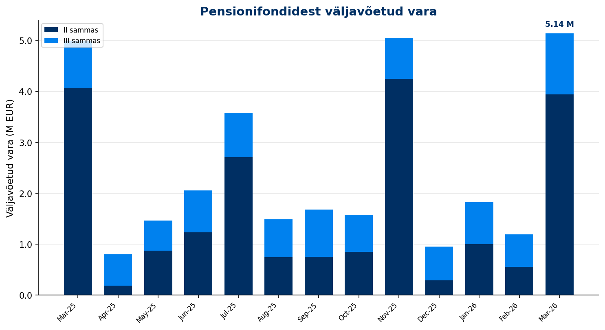
| KPI | Märts 2026 | YoY | YTD |
|---|---|---|---|
| II samba lahkujate vara | 2.4 M EUR | 6.4% | 4.7 M EUR |
| II samba väljujate vara | 3.9 M EUR | -3.0% | 5.5 M EUR |
| III sambast väljavõetud vara | 1.2 M EUR | 28.7% | 2.7 M EUR |
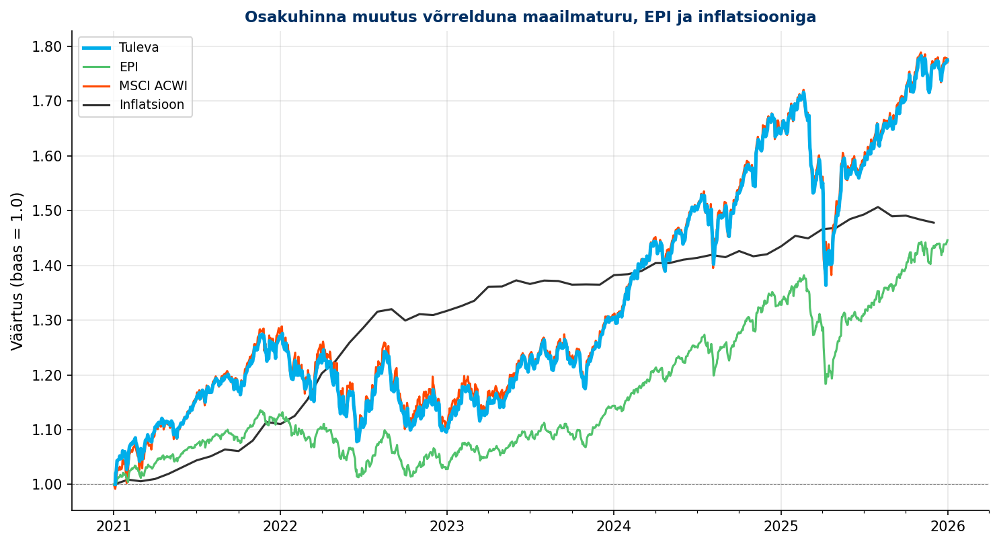
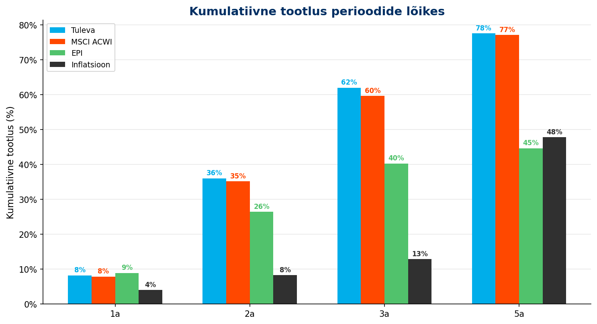
Aruanne genereeritud Tuleva Reporting Engine'iga